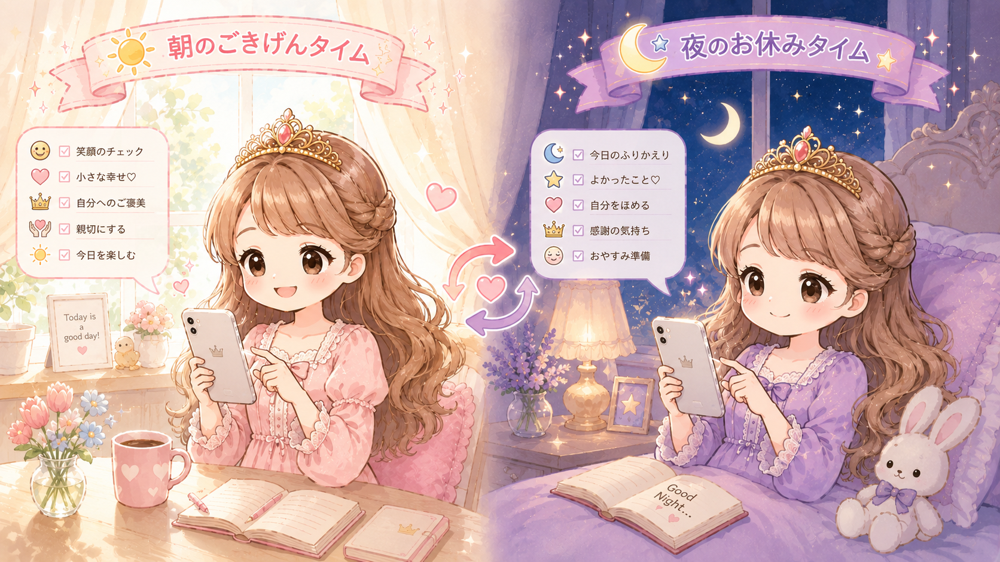
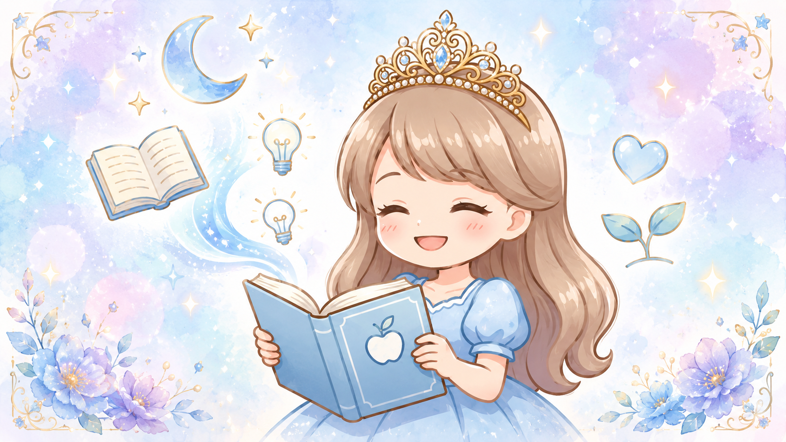
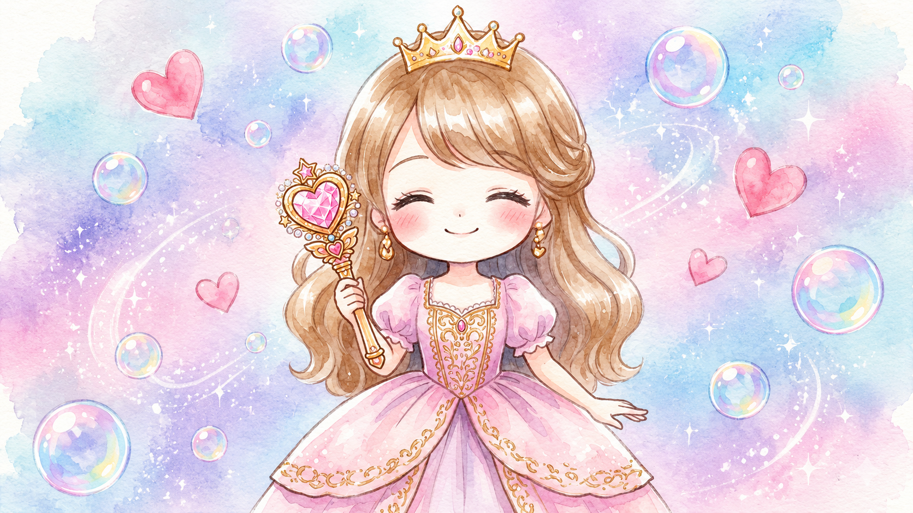
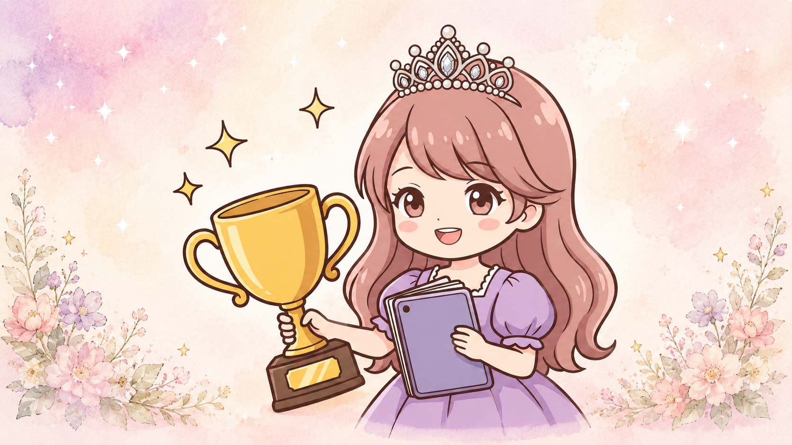
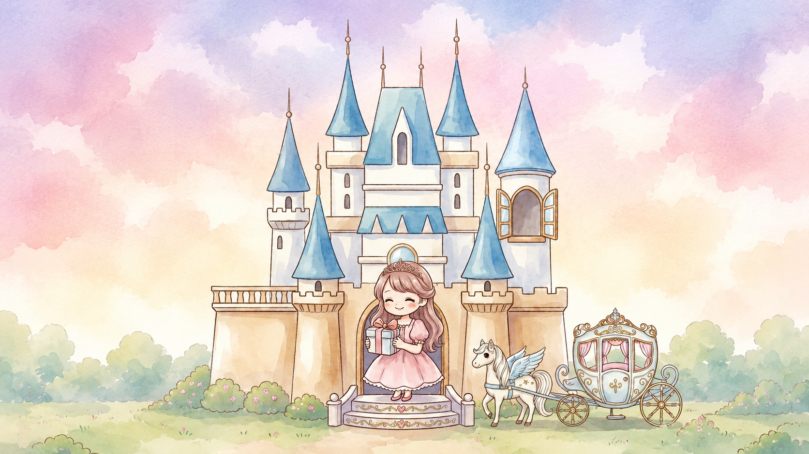
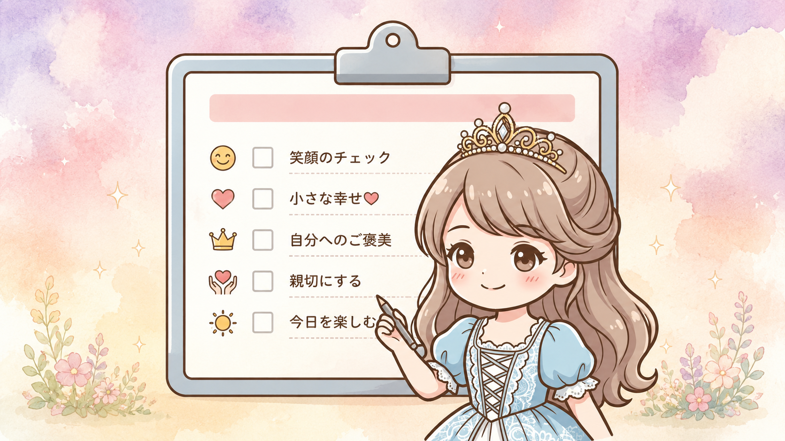

👑
— Gokigen Hime Diary —
ごきげん姫の自分軸
〜 お姫様気分のセルフケア・ダイアリー 〜

「自分の機嫌を自分でとる」
落ち込んだ朝も、頑張りすぎた夜も──
執事ルシアンが、そっと寄り添ってくれる。
他人軸から自分軸を育み、自分らしくごきげんで過ごす。
— Gokigen Hime Diary —
〜 お姫様気分のセルフケア・ダイアリー 〜
「自分の機嫌を自分でとる」
落ち込んだ朝も、頑張りすぎた夜も──
執事ルシアンが、そっと寄り添ってくれる。
他人軸から自分軸を育み、自分らしくごきげんで過ごす。
— こんなお悩みありませんか？ —
好きなこと、やりたいことが見つからない
周囲の評価が気になってしまう
人の顔色やご機嫌を優先にしてしまう
つい「何でもいい」と周りに合わせてしまう
頼まれごとを、つい全部引き受けてしまう
自分に自信が持てない
周りの一言で、その日の気分が決まってしまう
いつも周りを優先して、気づけば自分のことは後回し。
頑張っているのに、なぜか満たされない。
やりたいことが分からないわけじゃない。
でも、本当にこれでいいのかなと、どこかで感じている。
そんなふうに思うことは、ありませんか？
私たちは長い間、周りの期待や役割を優先して生きていると、
自分の本当の気持ちが、分からなくなってしまうことがあります。
— ごきげん姫アプリは —
頑張ってきた私へ。
家族のため、職場のため、誰かのため、
人生の主役を譲り続けてきたあなたへ。
これからは、あなた自身の人生を祝福する時間。
人に合わせすぎる人生は、
今日で終わりにしよう。
ごきげん姫アプリは、自分の人生の主役になり、自分で脚本を書き換えるように、今の環境や思考から主体的な毎日へとシフトできます。他人の目や評価に振り回される「他人軸」を手放し、自分の意志で選択・行動する「自分軸」を取り戻すことができます。
自分が主人公であると自覚することで、幸福度や心理的欲求の満たされ方が大きく向上します。
「自分軸」を取り戻すことで、日々の壁や失敗も、ドラマチックな物語を面白くするための「試練」や「伏線」として捉え直すことができます。
主役になる第一歩として、まずは日常のほんの小さなことから「自分がどうしたいか」を問いかけ、自分の望む選択を一つずつ積み重ねていくことが大切です。
このアプリでは、6つのお部屋を巡りながら、自分軸を育み、自分らしくごきげんで過ごせるようになります。
💗 自分を深く知るワーク
〜 思考整理・本音発見 〜
毎日の気分や本音にやさしく耳を傾けて、自分の感情のクセや「本当に大切にしたいもの」を、少しずつ発見していきます。「私はどう感じている？」「何を望んでいる？」と問いかけながら、長い間忘れていた本当の声を、ゆっくり取り戻していく時間です。考えるのではなく、感じてみる。自分の内側に、ちゃんと答えがあったことに気づける場所です。
🌸 自分らしい習慣をつくる
〜 ごきげんリズムを育む 〜
朝・昼・夜の小さな儀式や、お姫様気分のセルフケアを通して、毎日のリズムを整え、ごきげんに過ごす力を育てていきます。白湯・深呼吸・香り・ハーブティーなど、自分が心地よく感じるものを自由にカスタム。無理せず、自分のペースで続けられるから、三日坊主だったあなたも、続けられる自分に変わっていきます。
👑 なりたい自分を叶える
〜 理想を描き、現実にしていく 〜
やりたいことや理想の姫像を描き、月ごとに振り返りながら、未来の私を少しずつ現実にしていきます。「叶えたい夢」「ワクワクすること」「なりたい姫像」を自由に書き出して、月初に設定、月末にじっくり振り返り。流される毎日から、自分の物語を紡ぐ毎日へ、少しずつ変わっていきます。
そんなあなたの毎日に、
執事ルシアン＝グレイが、
朝の挨拶から夜のおやすみまで、
やさしいメッセージでそっと寄り添い続けます ♡
— Recommended for you —
ひとつでも当てはまったら、ごきげん姫があなたを待っています ♡
✓ 家族や周りを優先して生きてきた方
✓ 頑張ることが当たり前になっている方
✓ 自分を後回しにしてきた方
✓ 自分の本音を知りたい方
✓ 自分らしく生きたい方
✓ 人生をもっと楽しみたい方
✓ 人生の主役として生きたい方
— 6つのお部屋 —

— Room 01 —
モーニング・イブニングページで、一日の始まりと終わりに自分にやさしく挨拶できます。6つの気分から今日のごきげん度をタップすると、執事ルシアンの優しいメッセージが届きます。夜はふんわり振り返って、自分に「お疲れさま」を伝えられます。

— Room 02 —
朝・昼・夜の三つの儀式で、1日のリズムを姫らしく整えます。白湯・深呼吸・香り・ハーブティーなど、お姫様気分のセルフケアを自由にカスタムできます。連続記録の炎マークで、続けるのがどんどん楽しくなります。

— Room 03 —
気持ちと向き合う4ステップループ＋3つの深さのタブで、本音を整理できます。毎日・ふかぼり・変身ワークの3階層で、気軽な気分整理から深い自己探求まで自由に選べます。執事ルシアンが、本音への気づきをそっとサポートします。

— Room 04 —
心・体・食事・理想の姿まで、お姫様を総合的にケアします。ダイエットプラン自動計算（基礎代謝×活動量）、食材100品＋ドリンク14種から1タップで食事ログ、週次ビューティ指標までしっかり揃っています。なりたい姫像へ、確実に近づけます。

— Room 05 —
なりたい自分を叶える、自由律のホームベースです。マイプリンセスのプロフィール、やりたいこと50個リスト、未来の自分への手紙、感謝日記など、自分だけの物語を紡げます。読み返すたびに、新しい自分と出会えます。

— Room 06 —
月の主人公として、人生をデザインするお部屋です。月初に「今月のお姫様像」を設定し、月末にじっくり振り返ります。1ヶ月単位で自分を見つめ直せるから、日々に流されず、自分の芯が育っていきます。
ごきげん姫と過ごす時間で、こんな未来が待っています ♡
✅ 自分に自信を持てるようになって、自分を好きになれる
✅ 自分の機嫌を、自分でとれるようになる
✅ 相手の機嫌より、自分の本音を大切にできる
✅ 「NO」も言える安心感が持てる
✅ やりたいことに一歩踏み出せる私へ戻れる
✅ 「嫌われるかも」から「私はこう思う」に変わる
✅ 本音でつながる人間関係がつくれる
最初は「私はどうしたい？」と問いかけるだけでも、戸惑うかもしれません。
でも、毎日少しずつ、自分の声にやさしく耳を澄ませて、「私はこうしたい」を選び続けるうちに──。
小さな選択の積み重ねが、いつの間にか「自分軸の私」を育てていきます。
周りの目より、自分の心が真ん中にある毎日。
ありのままの自分でいられる安心感に、ふんわり包まれて。
気がつけば、毎日があなた自身の物語の主役になっている──。
そんな未来が、もう少し先で待っています。
さあ、今日から一緒に、
あなたの人生の主役を取り戻しに行きましょう ✨
— 体験者の声 —
「執事ルシアンの存在感が想像以上に大きくて、朝のメッセージで救われる日が何度もありました。」
「自分の気分を毎日タップするだけなのに、1週間で『あれ、私こんなに気分の波あったんだ』って気づけた」
「『なりたい姫像』を書き出してから、毎日の選択が変わった気がします。続けたい。」
「朝の白湯と深呼吸の儀式を始めたら、午前中の気分が驚くほど穏やかになりました。」
「食事ログがスタンプみたいで楽しい。三日坊主だった私が、1ヶ月続いてます。」
「アプリを開くだけで気分が上がる。お姫様気分のデザインがとにかく可愛いです。」
「他人の目ばかり気にしていた私が、『私はどうしたい？』と聞けるようになりました。」
— 料金プラン —
気軽に始めたい方へ
¥980
買い切り
じっくり育てたい方へ
¥1,980/月
サブスク
本気で変わりたい方へ
¥5,980/月
サブスク（先着10名）
※ 価格は予定です。正式リリース時に変更の可能性があります。
— よくあるご質問 —
Q. スマホアプリですか？
A. ウェブアプリです。iPhone でも Android でも、ホーム画面に追加すれば本物のアプリのように使えます。
Q. データはどこに保存されますか？
A. お嬢様の端末の中にだけ保存されます。サーバーには一切送信されないので、プライバシー◎です。
Q. 続けるのが苦手でも大丈夫？
A. 大丈夫です。1日1分から始められる小さな儀式が用意されています。執事ルシアンがいつも寄り添ってくれるから、続けやすい。
Q. 解約はできますか？（サブスクの場合）
A. いつでも解約OKです。縛りはありません。
Q. 機械が苦手でも使えますか？
A. もちろん大丈夫です。難しい操作はなく、タップするだけのシンプル設計。文字入力も最小限なので、ITが苦手な方でも安心して始められます。
Q. どのプランから始めたらいい？
A. まずは無料診断で、自分のタイプを知ることから始めるのがおすすめ。気軽に試したい方は「Light」、じっくり育てたい方は「Standard」、本気で変わりたい方は「Premium」が向いています。
Q. 1日にどれくらいの時間が必要？
A. 5分から始められます。朝の3分・夜の2分など、忙しい日でも続けやすい設計。お疲れの日は1分だけでもOKです。
— アプリを作った人 —
こんにちは、ayaです ♡
ヨガを通して、女性の心と体を整えるお仕事をしています。
──でも、こんな私も、ずっと「他人軸」で生きてきた一人です。
会社員時代の私は、いつも周りのために、一生懸命がんばっていました。
人の顔色を伺うのが当たり前で、頼まれごとは断れない。
「やさしいね」と言われると、ますます引き受けてしまう。
笑顔で周りに合わせて、
自分の本音は、そっと閉じ込めて──。
周りの期待に応えようと、ずっとがんばり続けていました。
でも──。
後輩を育てるのが、わたしの仕事。
それか、代打。
それでも、精一杯やってるつもりだけど──。
みんな、「やって当たり前」扱い。
当初は良かれと思って善意で「やってあげて」いたことが、
いつの間にか「当たりまえ」みたいな扱いをされて、
全く感謝されなくなり──。
そのうち、
「それってあなたの仕事でしょ」なんて、
まるで義務みたいにされて、
余計な仕事ばっかり、
雪だるま式に増えていき──。
気がつけば、一人だけブラック企業で働かされているみたいに、
疲労困憊してしまう羽目に。
友達や同期はみんな、
妻になったり、ママになったり。
会社を興して、
好きなことを仕事にして、
キラキラ充実しているのに──。
わたしなんて、
毎日残業続きで、
自分が行きたいお店に、
行くことさえできない。
なんだかな──。
そんな毎日に疲れ果てて、ある日ふっと「私の人生、私のじゃないみたい」と感じたんです。
そんな時に出会ったのが、ヨガでした。ポーズを取りながら、自分の呼吸に意識を向ける。頭で考えるのをやめて、心と体の声に耳を澄ませる──。
「今、私はどう感じている？」
「私は何を望んでいる？」
「私はどうしたい？」
ヨガを続けるうちに、少しずつ「私の本当の声」が、聞こえるようになっていきました。
ヨガ哲学を学ぶ中で出会った「五大元素（地・水・火・風・空）」。私たちの中にある5つの要素のバランスを整えると、心も体も自然と調っていく──。
自分の本音を、大切にする。
自分の機嫌を、自分でとる。
小さな「好き」を、見つけていく。
そんな日々を積み重ねるうちに、いつの間にか他人軸から自分軸へ。気がついたら、毎日が自分の物語になっていました。
「私と同じように、他人軸で疲れている女性に、もっと気軽に、楽しく、自分軸を育てる場所を届けたい」
そんな想いから、ごきげん姫アプリは生まれました。ヨガ哲学とお姫様気分のセルフケアを組み合わせて、執事ルシアンと一緒に、毎日少しずつ自分軸が育っていく──。そんなお部屋を、たくさん詰め込みました。
このアプリは、過去の私への手紙でもあります。
「あなたはあなたのままで、十分素敵だよ」
「もっと自分を大切にしていいんだよ」
そう伝えたくて、つくりました。
もしあなたが今、過去の私のように苦しんでいるなら──。ごきげん姫と一緒に、あなただけの物語を紡いでみませんか？
あなたの人生の主役は、あなた自身です ♡